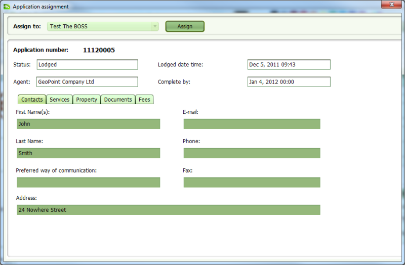

To assign an application, you must first ensure the Paid flag on the Fees tab is checked. If
you have permission to set the Paid flag, you can do this by editing the application and
checking the Paid checkbox on the Fees tab. Don’t forget to Save your changes.
Save your changes.
Select the paid application from the Unassigned applications list in the Dashboard or search
for the application using the Application Search screen. Once you have located the
application, click the Assign tool. This will open the Application Assignment screen (a
variation of the Application Details screen). Click the Assign button to assign the
application. When the Assign action is complete, you will be returned to the Dashboard and
the assigned application will appear in the Assigned applications list.
Assign tool. This will open the Application Assignment screen (a
variation of the Application Details screen). Click the Assign button to assign the
application. When the Assign action is complete, you will be returned to the Dashboard and
the assigned application will appear in the Assigned applications list.

Application Assignment
Typically users will only be able to assign applications to themselves (i.e. they will be able to pull work), however team leaders will be able to manage the workload of their teams and will be able to assign and reassign applications to other users by selecting the appropriate user from the User drop down list.